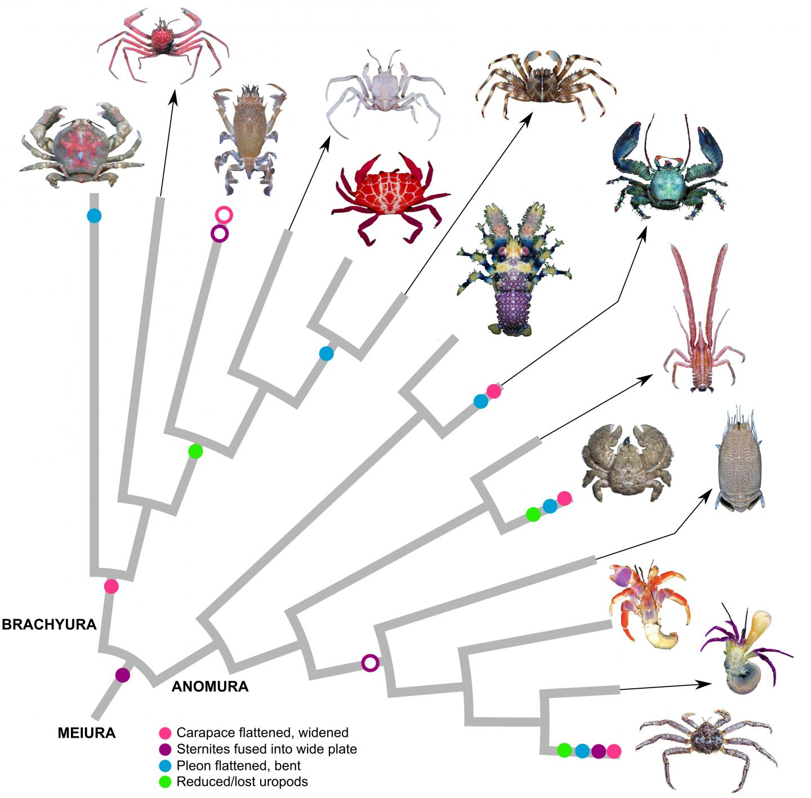

Carcinization
Carcinization is an example of convergent evolution in which a crustacean evolves into a crab-like form from a non-crab-like form. This phenomenon has occurred independently in several different lineages of decapod crustaceans, making it a fascinating subject of study in evolutionary biology.
This page is meant to demonstrate the ability of artificial intelligence to write HTML code. The content, layout, and styling of this page were generated with the assistance of an AI programming assistant.
